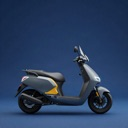
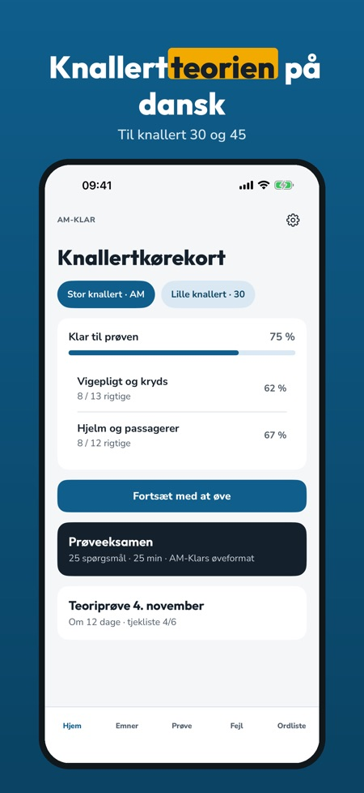
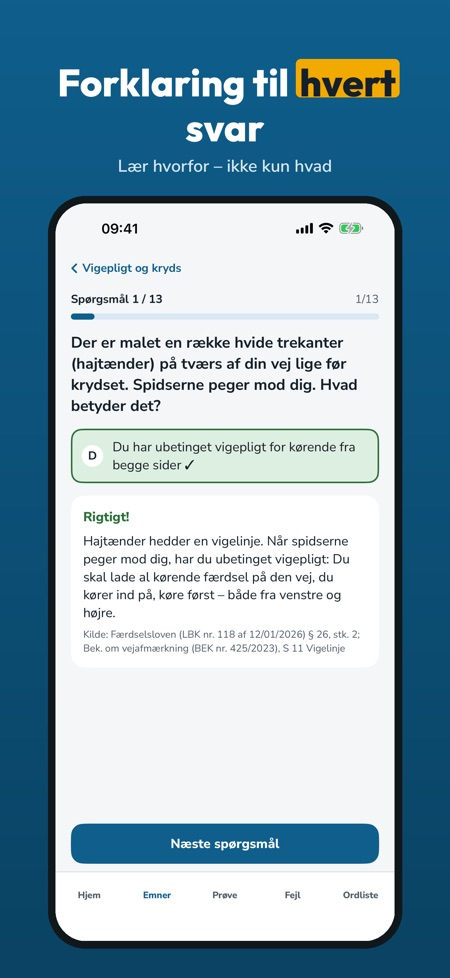
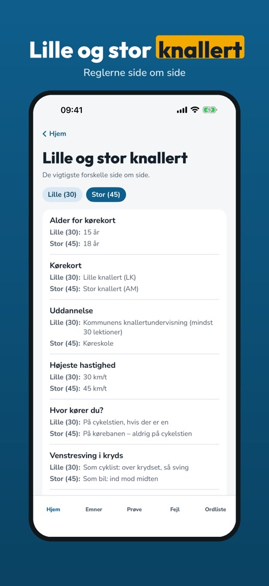

AM-Klar hjælper dig med at øve teorien til knallertkørekortet, med knallertregler og ikke bilregler. Du får forklaring til hvert svar.



Ja, lille og stor knallert vises side om side: alder, bevis, fart og cykelsti.
Knallertregler, ikke bilregler.
Ja, en prøveeksamen med tid og resultat pr. emne.
Ja, den virker uden internet.
20 spørgsmål, én prøveeksamen, ordlisten og tjeklisten.
Nej. Den fulde version er et engangskøb, der låser alle spørgsmål, prøveeksamener og statistik op. Intet abonnement.
Ja. Køber en voksen i familien appen, får du også den fulde version.
Nej. AM-Klar er uafhængig, ikke tilknyttet Færdselsstyrelsen eller politiet, holder ikke prøver og udsteder ikke kørekort.
AM-Klar hjælper dig med at øve teorien til knallertkørekortet – med knallertregler, ikke bilregler.
Du kan øve 20 spørgsmål, tage én prøveeksamen og bruge ordlisten og tjeklisten uden køb. Den fulde version er et engangskøb, der låser alle spørgsmål, prøveeksamener og statistik op. Intet abonnement. Familiedeling er slået til: køber en voksen i familien appen, får du også den fulde version.
AM-Klar er uafhængig og ikke tilknyttet Færdselsstyrelsen eller politiet. AM-Klar holder ikke prøver og udsteder ikke kørekort.